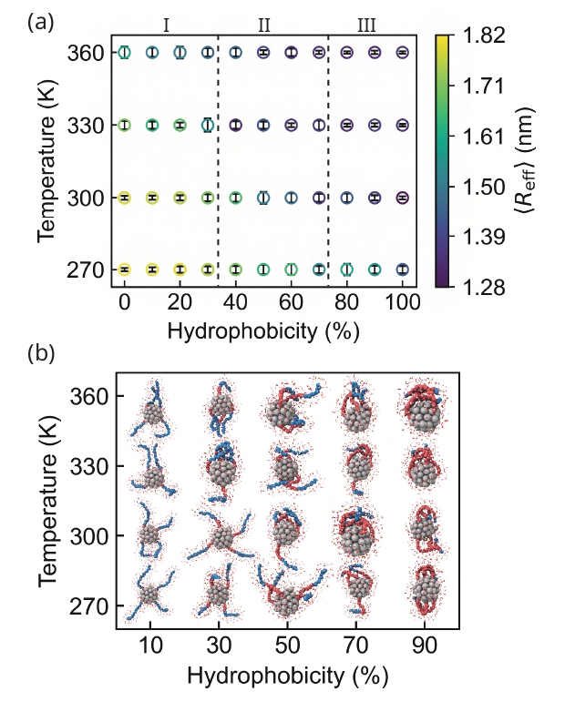
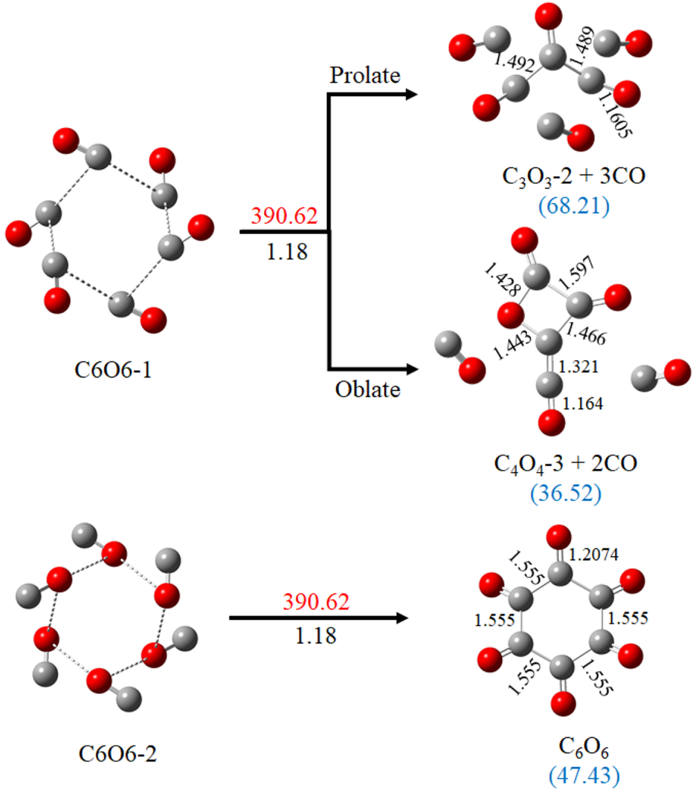

Molecular simulation, quantum chemistry & the structure of soft matter
I study how molecular-level interactions give rise to emergent structure — from the hydrophobic collapse of thermoresponsive diblock copolymers to the pressure-driven polymerization of carbon monoxide — using molecular dynamics, DFT, and free-energy methods.
I am a computational materials scientist and chemist with research experience in molecular dynamics simulations, quantum chemistry, and computational modeling of molecular and nanoscale systems.
My research has focused on understanding structure, dynamics, thermoresponsive behavior, hydrophobic collapse, polymer conformations, and molecular interactions using atomistic and coarse-grained computational approaches.
I am particularly interested in developing computational approaches that connect molecular-level interactions with emergent structural and thermodynamic behavior.
Atomistic and coarse-grained simulations of polymers, nanoparticles and biomolecular systems.
Quantum chemical calculations, DFT, molecular structure optimization, electronic structure and reaction mechanisms.
Polymer-grafted nanoparticles and temperature-, hydrophobicity- and pH-dependent structural transitions.
Polymer conformations, grafting-density effects, mushroom-to-brush transitions and polymer–solvent interactions.
Potential of mean force calculations, umbrella sampling and molecular-level analysis of conformational transitions.
Molecular-level modeling of materials and interfaces to understand structure–property relationships.
M.S.(R.) Thesis — IIT Delhi

This project investigated how polymer hydrophobicity and temperature influence the structure and conformational behavior of polymer-grafted nanoparticles.
Research Project — IIT Delhi
Molecular dynamics simulations were used to investigate polymer architecture, grafting density and pH-dependent structural behavior of polymer-functionalized gold nanoparticles.
M.Sc. Thesis — MNIT Jaipur

This project investigated the molecular mechanism of pressure-induced carbon monoxide polymerization using quantum chemical calculations.
A collection of Python-based scripts for analysis and post-processing of molecular dynamics trajectories — extracting structural and dynamical properties and assisting in systematic analysis of simulation data.
Chauhan, Abhay, and Divya Nayar. "Designing Thermoresponsive Nanoparticles through Hydrophobicity Control of Grafted Diblock Copolymers."
Molecular Systems Design & Engineering (2026) · DOI: 10.1039/D6ME00040A
Chauhan, Abhay, et al. "Understanding Pressure-Induced Polymerization of Carbon Monoxide at Molecular-Level: A Quantum Chemical Investigation of Oligomerization of (CO)ₙ (n = 2–6)."
International Journal of Quantum Chemistry (2026) · DOI: 10.1002/qua.70202
Indian Institute of Technology (IIT) Delhi, India — Computational Materials Science
Malaviya National Institute of Technology (MNIT) Jaipur, India — Computational Chemistry
Swami Vivekanand Subharti University, Meerut, India — Physical & Organic Chemistry
Indian Institute of Technology Delhi
Taught graduate students Python 3, HPC architecture, parallel job execution, CPU allocation and HPC commands, with hands-on training in GROMACS and LAMMPS for molecular dynamics simulations.